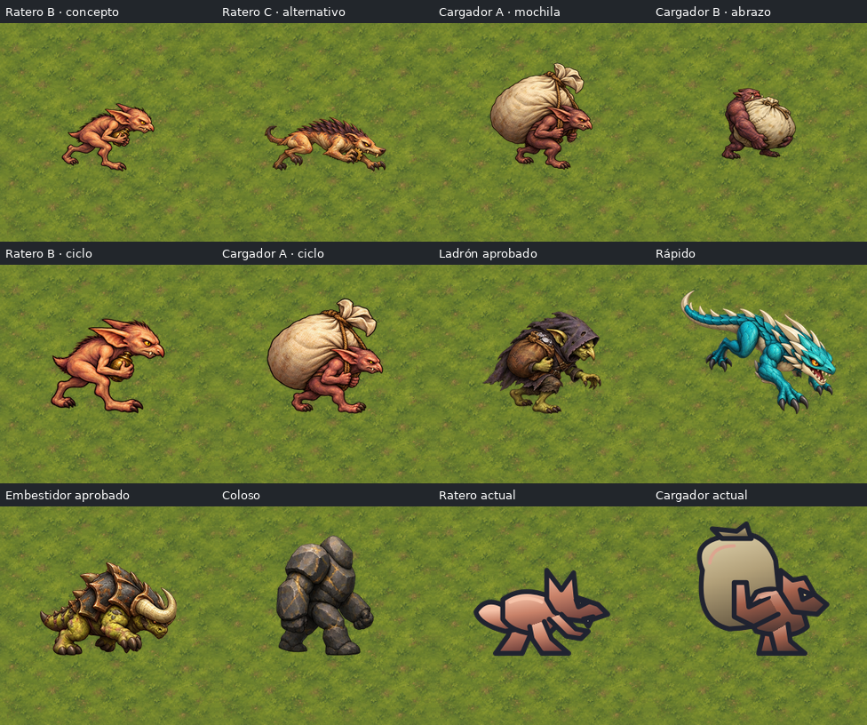
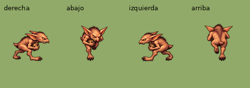
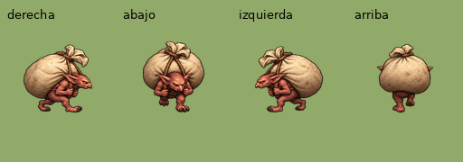
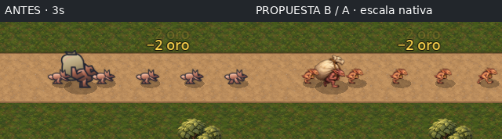
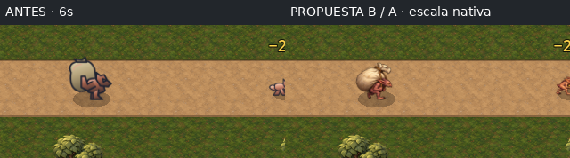
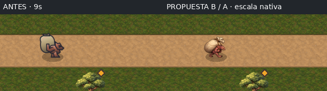

Sin aprobación ni integración. Dos Rateros (B/C) y dos Cargadores (A/B). Ciclos exploratorios de Ratero B y Cargador A: Lucas elige antes de integrar. El estudio Ratero A se descartó por realismo y halo.
Hoja 220 px · Lienzos 34 px · Siluetas de 34 px visibles



GIF: cadencia de revisión común por especie; las velocidades del juego dependen del recorrido. Atlas 4 direcciones × 4 fases, no modelo 3D compartido. Hay deriva de proporciones y rasgos entre vistas.
Escena y oleada de producción, avance automático sin torres ni intervención humana. Se salta a la oleada 8 con la función existente de pruebas; a los 3/6/9 segundos se pausa y se cambian solo textura y atlas sobre duplicados de EnemyData en memoria. Mismos enemigos, posición, datos, cámara y HUD en cada par. No se guarda la propuesta en el juego.


